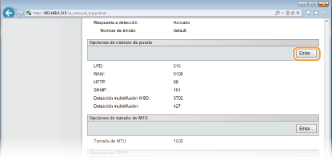
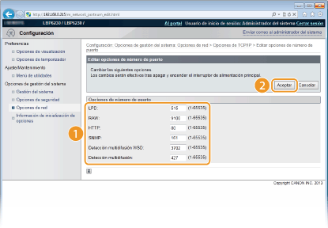

0KXF-02Y
Los puertos sirven como extremos para establecer la comunicación con otros dispositivos. Normalmente, los números de puerto estándar se utilizan para los principales protocolos, pero los dispositivos que utilizan estos números de puerto son vulnerables a ataques debido a que estos números de puerto son muy conocidos. Para reforzar la seguridad, algunos administradores de red prefieren cambiar los números de puerto. Cuando se modifica un número de puerto, el nuevo número debe compartirse entre los dispositivos de comunicación, como es el caso de los ordenadores y los servidores. Si cambia un número de puerto, configúrelo también en este equipo.
1
Inicie el IU remoto e inicie sesión en modo Administrador del Sistema. Inicio del IU remoto
2
Haga clic en [Configuración].

3
Haga clic en [Opciones de red]  [Opciones de TCP/IP].
[Opciones de TCP/IP].

4
Haga clic en [Editar] en [Opciones de número de puerto].

5
Cambie el número de puerto y haga clic en [Aceptar].

[LPD]/[RAW]
Cambie el puerto utilizado para la impresión LPD o para la impresión RAW. Para obtener más información sobre cada protocolo, consulte Configuración de protocolos de impresión y de servicios web.
Cambie el puerto utilizado para la impresión LPD o para la impresión RAW. Para obtener más información sobre cada protocolo, consulte Configuración de protocolos de impresión y de servicios web.
[HTTP]
Cambie el puerto que utiliza HTTP. HTTP se emplea en las comunicaciones a través de la red, como cuando se accede al equipo a través del IU remoto.
Cambie el puerto que utiliza HTTP. HTTP se emplea en las comunicaciones a través de la red, como cuando se accede al equipo a través del IU remoto.
[SNMP]
Cambie el puerto que utiliza SNMP. Para obtener más información sobre SNMP, consulte Supervisión y control del equipo con SNMP.
Cambie el puerto que utiliza SNMP. Para obtener más información sobre SNMP, consulte Supervisión y control del equipo con SNMP.
[Detección multidifusión WSD]
Cambie el puerto utilizado para la detección multidifusión WSD. Para obtener más información sobre WSD, consulteConfiguración de protocolos de impresión y de servicios web.
Cambie el puerto utilizado para la detección multidifusión WSD. Para obtener más información sobre WSD, consulteConfiguración de protocolos de impresión y de servicios web.
[Detección multidifusión]
Cambie el puerto utilizado para la detección multidifusión SLP. Para obtener más información sobre SLP, consulte Configuración de la comunicación SLP con imageWARE.
Cambie el puerto utilizado para la detección multidifusión SLP. Para obtener más información sobre SLP, consulte Configuración de la comunicación SLP con imageWARE.
6
Reinicie el equipo.
Apague el equipo, espere al menos 10 segundos y vuelva a encenderlo.